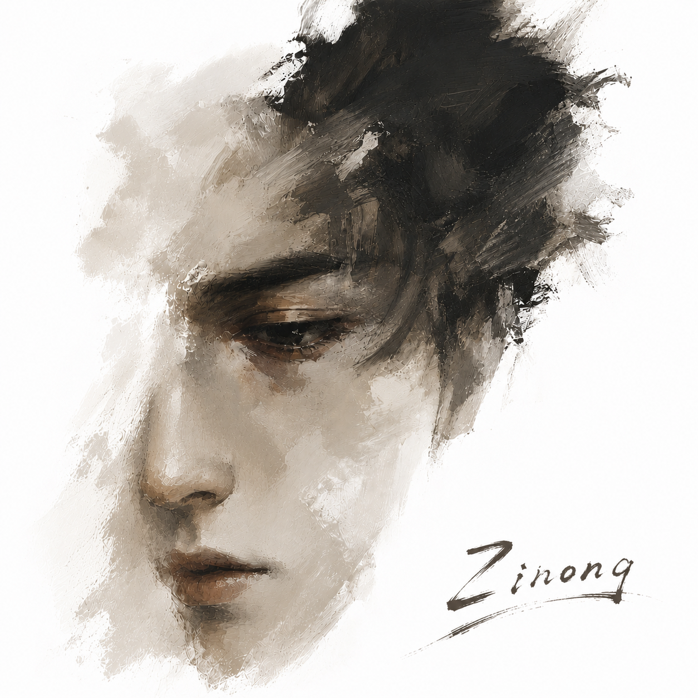

我更倾向于 FDE 式的产品工作方式：先进入用户场景，理解真实工作流、角色分工和决策成本， 再判断哪些环节适合交给 AI 提效，哪些环节必须保留人工确认、权限控制和结果追溯。
我会把模型能力边界转化成产品规则：明确输入质量、上下文来源、Prompt 结构、知识库范围、异常兜底和评估指标， 让 AI 功能不是一次性的演示，而是用户可以理解、信任并持续复用的产品能力。
用户现场
AI 边界判断
交付验证
About Me
我更倾向于 FDE 式的产品工作方式：先进入用户场景，理解真实工作流、角色分工和决策成本， 再判断哪些环节适合交给 AI 提效，哪些环节必须保留人工确认、权限控制和结果追溯。
我会把模型能力边界转化成产品规则：明确输入质量、上下文来源、Prompt 结构、知识库范围、异常兜底和评估指标， 让 AI 功能不是一次性的演示，而是用户可以理解、信任并持续复用的产品能力。

Selected Work
Social Media
短视频入口，适合发布 AI 产品观察、工具体验和作品集更新。
入口待补充
长视频入口，适合沉淀 AI 产品案例拆解、流程演示和项目复盘。
入口待补充
动态入口，适合发布行业观察、学习记录和 AI 产品观点。
入口待补充
图文入口，适合展示转型记录、产品方法和作品集过程。
入口待补充